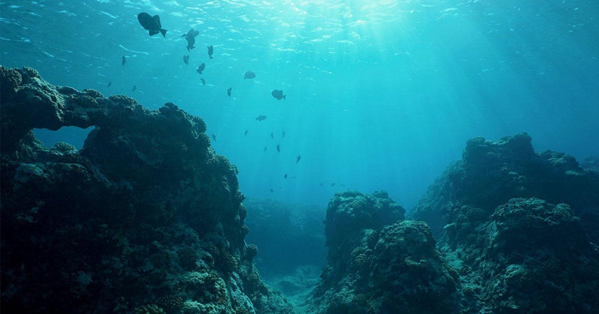

Deep Sea
by Tester
Posted on January 4, 2012 at 12:00 PM

The deep sea or deep layer is the lowest layer in the ocean, existing below the thermocline and above the seabed, at a depth of 1000 fathoms or more. Little or no light penetrates this part of the ocean, and most of the organisms that live there rely for subsistence on falling organic matter produced in the photic zone.
From the time of Pliny until the late nineteenth century...humans believed there was no life in the deep. It took a historic expedition in the ship Challenger between 1872 and 1876 to prove Pliny wrong; its deep-sea dredges and trawls brought up living things from all depths that could be reached. Yet even in the twentieth century scientists continued to imagine that life at great depth was insubstantial, or somehow inconsequential. The eternal dark, the almost inconceivable pressure, and the extreme cold that exist below one thousand meters were, they thought, so forbidding as to have all but extinguished life. The reverse is in fact true....(Below 200 meters) lies the largest habitat on earth..
In 1960, the Bathyscaphe Trieste descended to the bottom of the Mariana Trench near Guam, at 10,911 m (35,797 ft; 6.780 mi), the deepest known spot in any ocean. If Mount Everest (8,848 metres) were submerged there, its peak would be more than a mile beneath the surface. The Trieste was retired, and for a while the Japanese remote-operated vehicle (ROV) Kaikō was the only vessel capable of reaching this depth. It was lost at sea in 2003. In May and June 2009, the hybrid-ROV (HROV) Nereus returned to the Challenger Deep for a series of three dives to depths exceeding 10,900 meters.
It has been suggested that more is known about the Moon than the deepest parts of the ocean. Life on the deep ocean floor was assumed to rely solely on falling organic matter, and therefore ultimately the sun, for its energy source until the discovery of thriving colonies of shrimps and other organisms around hydrothermal vents in the late 1970s. The new discoveries revealed groups of creatures that obtained nutrients and energy directly from thermal sources and chemical reactions associated with changes to mineral deposits. These organisms thrive in completely lightless and anaerobic environments in highly saline water that may reach 300 °F (150 °C), drawing their sustenance from hydrogen sulfide, which is highly toxic to almost all terrestrial life. The revolutionary discovery that life can exist under these extreme conditions changed opinions about the chances of there being life elsewhere in the universe. Scientists now speculate that Europa, one of Jupiter's moons, may be able to support life beneath its icy surface, where there is evidence of a global ocean of liquid water.